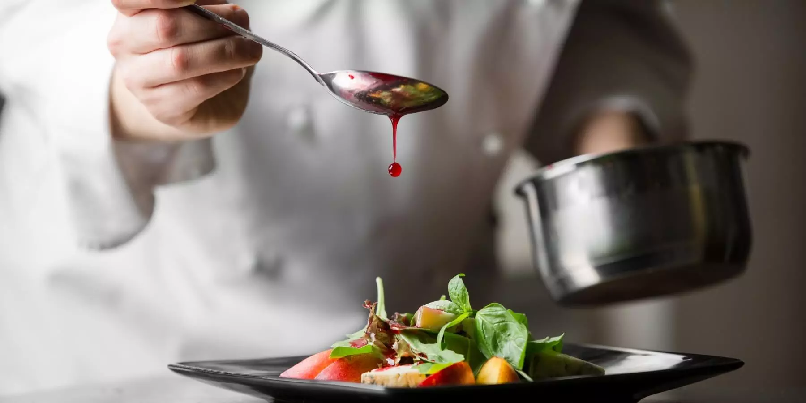

Actuellement étudiant en 1ere année de BTS SIO spécialité SLAM. Je suis un élève sérieux, curieux, qui a envie d’approfondir ses connaissances dans le domaine de l’informatique
Parcours scolaire :
2024-2026 : BTS SIO (services informatiques aux organisations)
2024-2021 : BAC professionnel cuisine

experience professionnel:
12 semaines de stage en cuisine chez la Bodega à Melun
7 semaines de stage en cuisine chez Fabrice à Melun
5 semaines de stage en cuisine chez Tout-Le-Monde à table a Savigny-le-temple
4 semaines de stage en cuisine chez Bassano à Lieusaint
Compétence:
communication,
travail en équipe,
polyvalence,curieux,
Déterminé
Projet proffesionel :
Document professionnel :